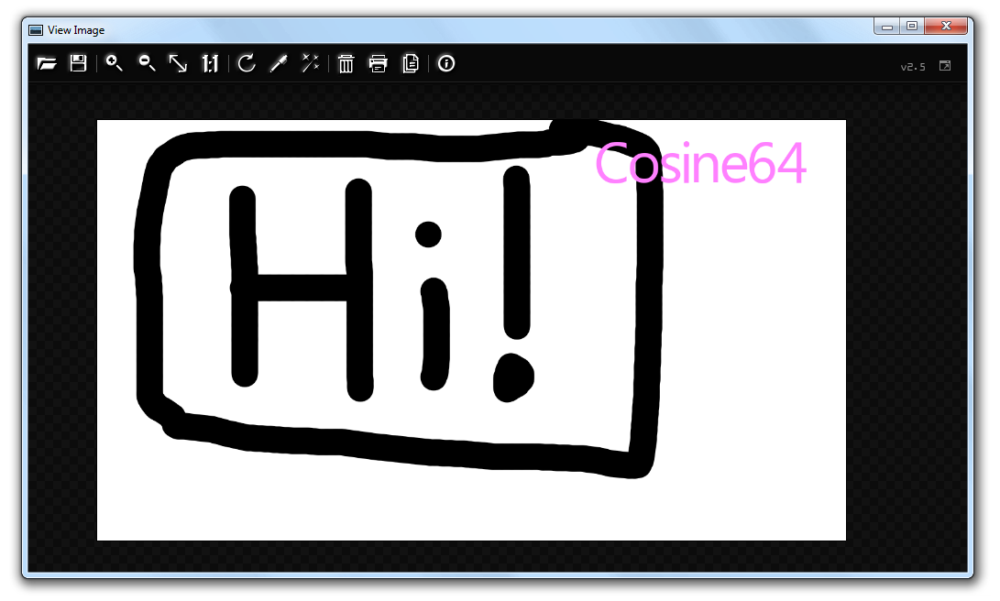

Cosine64 Image Viewer
An open source, lightweight, and reliable image viewer for Windows
IMPORTANT
Make sure all of the required dependencies are installed
Download them
You can find more information and older versions at the Github page


Plans for 2.6
ViewImage and Cosine64 is a project managed by 1 person, me! Since I have been working very hard on the project, I am going to take a break from working on the project to get prepared for version 2.6.
Version 2.6 will not add many new features, but will be completely refactored. The entire UI system will be completely rewritten to actually be fast, instead of lagging on more low power devices. The undo and redo system will be rewritten to be more optimized. And,
hopefully, I will make the left and right arrow keys better.
Version 2.5
ViewImage is now compatible with Windows XP and 32-bit systems! Unlike making compatibility worse like most programs, we want to achieve the highest possible range of operating systems.
Added image operations menu, which contains options and effects to modify the image. These will be listed below.
Added the draw text feature, which lets users draw text on the image with parameters such as the X and Y coordinate as well as the font and color used to display the font.
Added crop tool, which lets users crop the image to their desired size and position..
Added automatic adjust tool, which stretches the levels of each color channel to their maximum potential contrast.
Added ability to perform a gaussian blur on the image.
Added the ability to erase all annotations applied to image when desired.
Fixed bug where the window would turn gray if minimized.
Added major changes to the user interface, such as a redesigned context menu with icons, a cleaner toolbar with separators, and more consistent design.
Added ability to make the window always on top.
Added a lock button to the image resize UI, which lets users reserve an axis for the program to change based on the image’s current aspect ratio.
If the viewer fails to load a font, it will now tell you the font that is missing and will not annoy you with pop ups anymore.
Undo steps are now stored in disk instead of memory, which decreases the memory usage of the program. There is still a huge issue with undo efficiency which will be fixed in 2.6 when the entire undo system is rewritten.
The file save dialog now defaults to the same directory as the image is loaded in
The WASD key navigation is now optimized and improved to account for framerate (deltatime) and is now relative to the scale of the image.
The toolbar system has been rewritten to achieve the maximum performance.
The font system has also been rewritten to only load fonts once when the program starts, instead of every time the window has been updated. This should make a positive difference in performance.
Changed mouse behavior to properly unset mouse down when cursor exits window.
Added various optimizations to the draw tool such as only applying linear interpolation when it is necessary.
The toolbar is not re-rendered when panning the image or drawing for increased performance.
Bilinear interpolation is now more optimized.
Due to these optimizations, ViewImage now runs better on wine than it did in previous versions.
Version 2.4
Fixed a bug where the application was taking up all of your CPU usage when idle for no reason
Added a copy feature on toolbar to copy the image to the clipboard
Viewport now moves alongside mouse when selecting view preset
Added keyboard navigation support using Control + ALT
Added erase tool! Use the control key or right click to enable
Major changes to mouse behavior
Added an eyedropper tool using Shift+Z to select a color from the image
+ and - keys now change zoom
Added a frame around the image for improved visibility of transparent background images
Mouse wheel now changes sliders when hovering over
Added asterisk (*) to title bar when changes are not saved
Improved the way fonts are accessed, improving compatibility
Fixed issue with menu where it would not fully render the first time when mouse was placed close to the edge of the window
Improved performance by disabling anti-aliasing when panning the image
Fixed drawing alpha issue by converting images to premultiplied alpha when entering the problem
Improved quality and smoothness of the draw tool sampling
Added dynamic draw tool resolution adjustment based on system speed
Added soft and hard brush modes
Fixed print sizing
Added gamma correction to drawing based functionality to improve readability
Version 2.3
Added Undo/Redo
Added drawing customization such as color and size
Polished user interface
Optimized blur functionality
Added ability to resize images
Fullsreen button
Very advanced bug fixes
Other noticable improvements